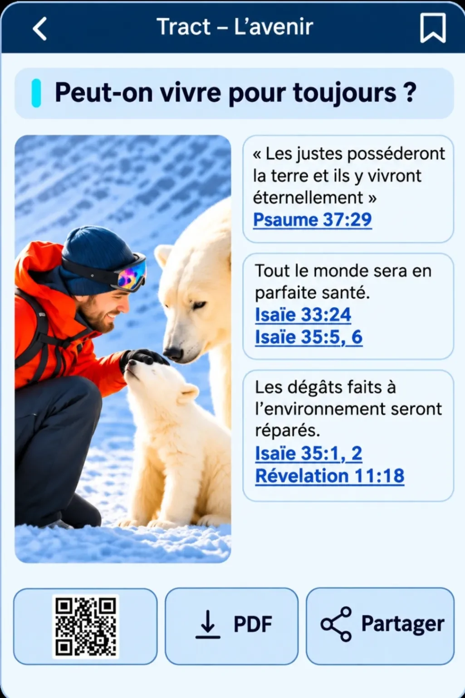

Tract — L’avenir Peut-on imaginer un avenir sans fin ?  La Bible annonce une vie durable sur la terre.Psaume 37:29 Elle décrit un avenir où les maladies auront disparu.Isaïe 33:24Isaïe 35:5, 6 La restauration de la terre fait aussi partie des promesses bibliques.Isaïe 35:1, 2Révélation 11:18